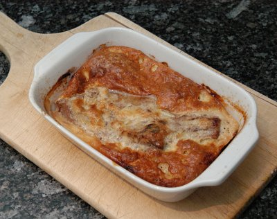

| Zutaten für 4 Personen: | |
| 150 g | frisch geriebener Comté- Käse (oder Gruyère) |
| 1 | Ei |
| 2 EL | Crème fraîche |
| frisch geriebene Muskatnuss | |
| 30g | Butter |
| 4 | Kalbskoteletts |
| Salz, Pfeffer aus der Mühle | |
(etwa 30 Minuten)
Den Backofen auf 250°C vorheizen. In einer Schüssel den Käse mit dem Ei und der Crème fraîche mischen. Mit Muskat würzen, salzen und pfeffern.
Die Butter in einer Pfanne erhitzen. Die Koteletts in der Butter pro Seite in etwa 3 Minuten halbgar braten.
Die Koteletts in einer feuerfesten Form anrichten. Mit je ¼ des Käsemasse bestreichen. Mit dem Bratfett beträufeln. Im heissen Backofen (Gas höchste Stufe) in etwa 15 Minuten fertig garen.
Die gleiche Zubereitungsart eignet sich auch für Hähnchenbrustfilets.
In Frankreich gibt es nur Brot dazu. doch passen auch Butternudeln oder Reis - oder ein gemischter Salat, wenn er nicht schon als Vorspeise serviert wurde.
Weinempfehlung: ein junger Beaujolais oder ein trockener weisser Jura-Wein, zum Beispiel ein Arbois.
Pro Person ca. 395 kcal / 1620 kJ
Die echte französische Küche von Susi Piroué, Seite 62
Sensationell gut. Wurde von mir mit Christa am Freitag 13.10.2000 bei Reini gekocht für 11 Personen. Ist leicht skalierbar, recht einfach und schmeckt toll. Leider etwas teuer. Richard Eigenmann, 26.10.2000
Am 16.3.2010 mit einem harten Bergkäse zubereitet. Der Käse war etwas zu kräftig und mit einem ganzen Ei für eine Portion wurde das fast schon ein bisschen wie eine Omelette. RE